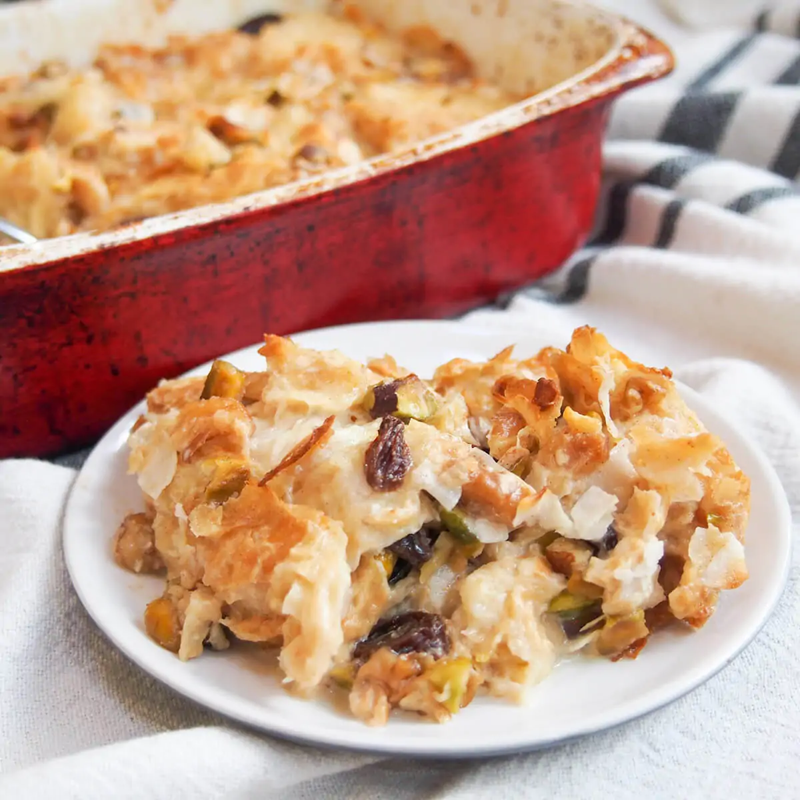

Om Ali or Umm Ali is the Egyptian equivalent to the western bread pudding. A traditional Egyptian dessert of soaked bread, milk and loads of nuts.
Omm Ali is sort of bread pudding. It can be made using phyllo dough, puff pastry or croissants. In most Egyptian pastry shops you can buy special Om Ali's dough to start with. I've made it today with puff pastry and find it quite successful. Om Ali is more of a winter dessert as it gives lots of energy to warm up with.

Why You'll Love Making It
A fun spin on the old favorite bread pudding
An authentic Egyptian dessert made with simple easy to find ingredients
Very adaptable to your dietary needs with lots of variations
Ingredients
Note: This is an overview of the ingredients. You'll find the full measurements and instructions in the recipe card (printable) at the bottom of the page.
Puff pastry, I'm using puff pastry in this recipe as it is easier, but you can use croissants as well as phyllo dough.
Sugar, or any sugar substitute.
Milk
Cool Whip, you can also use whipped cream AKA Chantilly cream
Mixed nuts
Instructions
Note: This is an overview of the instructions. The detailed instructions are in the recipe card below.
Cut the puff sheet into squares, place on a baking sheet lined with parchment paper. Poke several holes with a fork and bake until golden brown.
Lightly break the puff squares into a deep oven dish. Mix in your favorite nut mixture.
Microwave milk and sweeten to your taste then pour milk over. Let it soak for 5-10 minutes.
Spread whipped cream or cool whip on top to cover and broil or bake until top is golden brown. Serve with additional sweetened milk on the side.